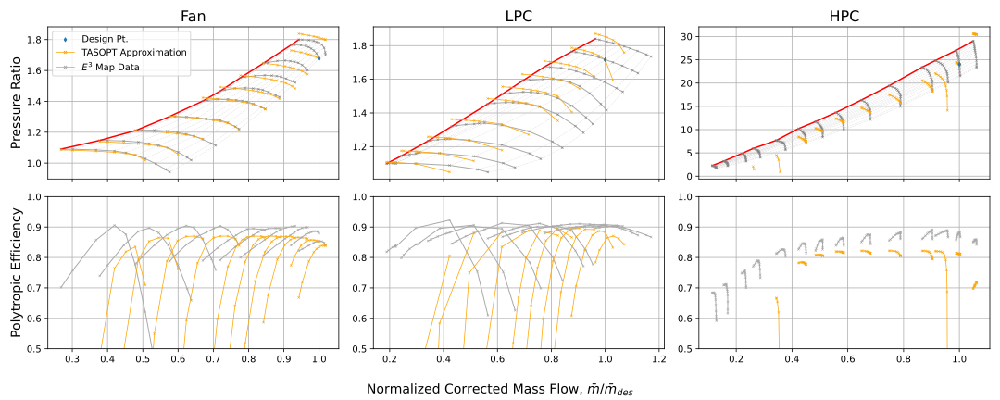

Propulsion system
A turbofan model is provided in TASOPT.jl
Turbofan model
TASOpt.engine.tfcalc! — Functiontfcalc(wing, engine, parg, para, pare, ip, ifuel, opt_calc_call, opt_cooling, initializes_engine)Calls function tfsize or tfoper for one operating point.
🔃 Inputs and Outputs
Input:
opt_calc_call: "sizing" call on-design sizing routine tfsize "operfixedTt4" call off-design analysis routine tfoper, specified Tt4 "operfixedFe" call off-design analysis routine tfoper, specified Feopt_cooling: turbine cooling flag "none" = no cooling mass flow "fixedcoolingflowratio" = use specified cooling flow ratios epsrow(.), calculate Tmrow(.) "fixedTmetal" = use specified metal temperatures Tmrow(.) , calculate epsrow(.)initializes_engine: true initialize variables for iteration in TFOPER false use current variables as initial guesses in TFOPER
TASOpt.engine.tfsize! — Functiontfsize!(gee, M0, T0, p0, a0, M2, M25,
Feng, Phiinl, Kinl, eng_has_BLI_cores,
BPR, pif, pilc, pihc,
pid, pib, pifn, pitn,
Ttf, ifuel, etab,
epf0, eplc0, ephc0, epht0, eplt0,
pifK, epfK,
mofft, Pofft,
Tt9, pt9, Tt4,
epsl, epsh,
opt_cooling,
Mtexit, dTstrk, StA, efilm, tfilm,
M4a, ruc,
ncrowx, ncrow,
epsrow, Tmrow,
Δh_PreC, Δh_InterC, Δh_Regen, Δh_TurbC,
Δp_PreC, Δp_InterC, Δp_Regen)Turbofan performance and sizing routine.
Calculation procedure follows that of Kerrebrock, but the usual gas property formulas are replaced by function calls, which can therefore implement more general gas models. In addition, a turbine cooling model is added.
The gas routines reside in the following source files: gascalc.f Routines for various processes (compressor, turbine, combustor, etc) gasfun.f Routines for computing cp[T], h[t], sigma[T], R, called by the routines in gascalc.f
🔃 Inputs and Outputs
Inputs:
gee: gravity accelerationM0: freestream MachT0: freestream temperature [K]p0: freestream pressure [Pa]M2: fan-face Mach numberM25: HPC-face Mach numberFeng: required net thrust (PKinl+PKout-Phi_jet)/u0 = sum( mdot u)Phiinl: inlet ingested dissipationeng_has_BLI_cores: false=core in clear flow, true=core sees PhiinlBPR: bypass ratio = mdotfan/mdotcorepif: fan pressure ratio ( = pt7 /pt2)pilc: LP comp pressure ratio ( = pt25/pt2)pihc: HP comp pressure ratio ( = pt3 /pt25)pid: diffuser pressure ratio ( = pt2 /pt0)pib: burner pressure ratio ( = pt4 /pt3)pifn: fan nozzle pressure ratio ( = pt7/pt2.1)pitn: turbine nozzle pressure ratio ( = pt5/pt4.9)Ttf: fuel temperature entering combustorifuel: fuel index, see function gasfun (in gasfun.f)hvap: fuel enthalpy of vaporization (J/kg)etab: combustor efficiency (fraction of fuel burned)epf0: fan max polytropic efficiencyeplc0: LPC max polytropic efficiencyephc0: HPC max polytropic efficiencyepht0: HPT max polytropic efficiencyeplt0: LPT max polytropic efficiencypifK: fan efficiency FPR offset: epolf = epf0 + epfK*(pif-pifK)epfK: fan efficiency pif derivativemofft: mass flow offtake at LPC discharge station 2.5Pofft: low spool power offtakeTt9: offtake air discharge total temperaturept9: offtake air discharge total pressureepsl: low spool power loss fractionepsh: high spool power loss fractionopt_cooling: turbine cooling flag "none" = no cooling, ignore all cooling parameters below "fixedcoolingflowratio" = usual cooling, using passed-in fcool "fixedTmetal" = usual cooling, but set (and return) fcool from TmetalMtexit: turbine blade-row exit Mach, for setting temperature dropsdTstrk: hot-streak temperature delta {K}, used only if optcooling="fixedTmetal"StA: area-weighted Stanton number , used only if optcooling="fixedTmetal"M4a: effective Mach at cooling-flow outlet (start of mixing)ruc: cooling-flow outlet velocity ratio, u/uencrowx: dimension of epsrow arrayncrow: number of blade rows requiring coolingepsrow(.): input specified cooling-flow bypass ratio if optcooling="fixedcoolingflowratio" output resulting cooling-flow bypass ratio if optcooling="fixedTmetal"Tmrow(.): input specified metal temperature [K] if optcooling="fixedTmetal" output resulting metal temperature [K] if optcooling="fixedcoolingflowratio"Outputs:
epsrow(.): see aboveTmrow(.): see aboveTSFC: thrust specific fuel consumption = mdot_fuel g / F [1/s]Fsp: specific thrust = F / (mdot u0) = F / ((1+BPR) mdot_core u0)hfuel: fuel heating value [J / kg K]ff: fuel mass flow fraction = mdotfuel / mdotcoremcore: core mass flow = mdot_core [kg/s]A2: fan-face area [m^2]A25: HPC-face area [m^2]A5: core nozzle area [m^2]A7: fan nozzle area [m^2]A6: core plume area [m^2]A8: fan plume area [m^2]Tt?: total temperatureht?: total complete enthalpy (includes heat of formation)pt?: total pressurecpt?: specific heat at stagnation temperature (= dh/dT)Rt?: gas constant at stagnation conditionsT?: static temperatureu?: velocityepf: fan polytropic efficiencyeplc: LPC polytropic efficiencyephc: HPC polytropic efficiencyepht: HPT polytropic efficiencyeplt: LPT polytropic efficiencyetaf: fan overall efficiencyetalc: LPC overall efficiencyetahc: HPC overall efficiencyetaht: HPT overall efficiencyetalt: LPT overall efficiencyLconv: T if convergence was successful, F otherwise
The "?" symbol denotes the station index: 0 freestream 18 fan face outside of casing BLs 19 fan face over LPC portion 2 fan face over fan portion 21 fan exit 25 LPC exit, HPC inlet 3 compressor exit 4 combustor exit before cooling air addition 41 turbine inlet after cooling air addition 45 HPT exit, LPT inlet 49 LPT exit 5 core nozzle 6 core flow downstream 7 fan nozzle 8 fan flow downstream
TASOpt.engine.tfweight — Functiontfweight(ac)Engine weight estimation function using Giulia Pantalone, Drela, or Fitzgerald model.
🔃 Inputs and Outputs
Input:
ac::aircraft: aircraft object
Output:
Weng: Total engine weight.Wnac: Nacelle weight.Webare: Bare engine weight.Snace1: Nacelle area.
Turbofan Maps
TASOpt.engine.Ncmap — MethodNcmap(pratio, mb, piD, mbD, NbD, Cmap)Calculates compressor or fan corrected speed as a function of pressure ratio and corrected mass flow
🔃 Inputs and Outputs
Inputs:
pratio: pressure ratiomb: corrected mass flowpiD: design pressure ratiombD: design corrected mass flowNbD: design corrected speedCmap(.): map constants
Outputs:
Nb: wheel speedNb_?: derivatives
TASOpt.engine.ecmap — Methodecmap(pratio, mb, piD, mbD, Cmap, effo, piK, effK)Calculates compressor or fan efficiency as a function of pressure ratio and corrected mass flow
🔃 Inputs and Outputs
Inputs:
pratio: pressure ratiomb: corrected mass flowpiD: design pressure ratiombD: design corrected mass flowCmap(.): map constantseffo: maximum efficiencypiK: pi-dependence offset eff = effo + effK*(pi-piK)effK: pi-dependence slope
Outputs:
eff: efficiencyeff_?: derivatives
TASOpt.engine.Ncmap1 — MethodNcmap1(pratio, m, piD, mbD, NbD, ABCDm, iabcd, Tr, pr)Calculates compressor or fan efficiency as a function of pressure ratio and corrected mass flow
🔃 Inputs and Outputs
Inputs:
pratio: pressure ratiomb: corrected mass flowpiD: design pressure ratiombD: design corrected mass flowNbD: design corrected speedABCDm: map constantsiabcd: map exponentsTr: T/Trefpr: p/pref
Outputs:
N: wheel speedN_?: derivatives
TASOpt.engine.ecmap1 — Methodecmap1(pratio, m, piD, mbD, ABCDm, iabcd, effo, Tr, pr)Calculates compressor or fan efficiency as a function of pressure ratio and mass flow
🔃 Inputs and Outputs
Inputs:
pratio: pressure ratiomb: corrected mass flowpiD: design pressure ratiombD: design corrected mass flowABCDm: map constantsiabcd: map exponentseffo: maximum efficiencyTr: T/Trefpr: p/pref
Outputs:
eff: efficiencyeff_?: derivatives
TASOpt.engine.etmap — Methodetmap(dh, mb, Nb, piD, mbD, NbD, ept0, Tmap, Tt, cpt, Rt)Calculates turbine efficiency as a function of work and corrected mass flow
🔃 Inputs and Outputs
Inputs:
dh: enthalpy changemb: corrected mass flowNb: corrected speedpiD: design pressure ratiombD: design corrected mass flowNbD: design corrected speedept0: turbine polytropic efficiency estimateTmap(.): map constants
Outputs:
eff: efficiencyeff_?: derivatives
TASOpt.engine.Pimap — MethodPimap(mb, Nb, piD, mbD, NbD, Cmap)Calculates compressor or fan pressure ratio as a function of pressure ratio and corrected mass flow
🔃 Inputs and Outputs
Inputs:
mb: corrected mass flowNb: corrected speedpiD: design pressure ratiombD: design corrected mass flowNbD: design corrected speedCmap(.): map constants
Outputs:
pratio: pressure ratiopi_?: derivatives
TASOpt.engine.tfoper! — Functionfunction tfoper!(gee, M0, T0, p0, a0, Tref, pref, Phiinl, Kinl, enghasBLIcores, pid, pib, pifn, pitn, Gearf, pifD, pilcD, pihcD, pihtD, piltD, mbfD, mblcD, mbhcD, mbhtD, mbltD, NbfD, NblcD, NbhcD, NbhtD, NbltD, A2, A25, A5, A7, optcalccall, Ttf, ifuel, etab, epf0, eplc0, ephc0, epht0, eplt0, pifK, epfK, mofft, Pofft, Tt9, pt9, epsl, epsh, optcooling, Mtexit, dTstrk, StA, efilm, tfilm, M4a, ruc, ncrowx, ncrow, epsrow, Tmrow, Feng, M2, pif, pilc, pihc, mbf, mblc, mbhc, Tt4, pt5, mcore, M25)
Turbofan operation routine
Calculation procedure follows that of Kerrebrock,
but the usual gas property formulas are replaced
by function calls, which can therefore implement
more general gas models.
In addition, a turbine cooling model is added.
The gas routines reside in the following source files:
gascalc.f Routines for various processes
(compressor, turbine, combustor, etc)
gasfun.f Routines for computing cp[T], h[t], sigma[T], R,
called by the routines in gascalc.f🔃 Inputs and Outputs
Inputs:
gee: gravity accelerationM0: freestream MachT0: freestream temperature [K]p0: freestream pressure [Pa]Tref: reference temperature for corrected mass flow and speedpref: reference pressure for corrected mass flowPhiinl: inlet ingested dissipation Phi_inleng_has_BLI_cores: false=core in clear flow, true=core sees Phiinlpid: diffuser pressure ratio ( = pt2/pt0)pib: burner pressure ratio ( = pt4/pt3)pifn: fan nozzle pressure ratio ( = pt7/pt6.9)pitn: turbine nozzle pressure ratio ( = pt5/pt4.9)Gearf: fan gear ratio ( = Nl/Nf )pifD: design fan pressure ratio ( = pt21/pt2 )pilcD: design LPC pressure ratio ( = pt25/pt19)pihcD: design HPC pressure ratio ( = pt3 /pt25)pihtD: design HPT pressure ratio ( = pt45/pt41)piltD: design LPT pressure ratio ( = pt49/pt45)mbfD: design corrected fan mass flow ( = mf*sqrt(Tt2 /Tref)/(pt2 /pref) )mblcD: design corrected LPC mass flow ( = mc*sqrt(Tt19/Tref)/(pt19/pref) )mbhcD: design corrected HLC mass flow ( = mc*sqrt(Tt25/Tref)/(pt25/pref) )mbhtD: design corrected HPT mass flow ( = mt*sqrt(Tt41/Tref)/(pt41/pref) )mbltD: design corrected LPT mass flow ( = mt*sqrt(Tt45/Tref)/(pt45/pref) )NbfD: design corrected fan speed ( = Nf/sqrt(Tt2 /Tref) )NblcD: design corrected LPC speed ( = Nl/sqrt(Tt19/Tref) )NbhcD: design corrected HPC speed ( = Nh/sqrt(Tt25/Tref) )NbhtD: design corrected HPT speed ( = Nh/sqrt(Tt41/Tref) )NbltD: design corrected LPT speed ( = Nl/sqrt(Tt45/Tref) )A2: fan-face area [m^2] mf = mcBPR, mt = mc(1+ff)A25: HPC-face area [m^2]A5: core nozzle area [m^2]A7: fan nozzle area [m^2]opt_calc_call: = "operfixedTt4", Tt4 is specified = "operfixedFe", Feng is specifiedTt4: turbine-inlet total temperature [K]Ttf: fuel temperature entering combustorifuel: fuel index, see function gasfun (in gasfun.f)hvap: fuel enthalpy of vaporization (J/kg)etab: combustor efficiency (fraction of fuel burned)epf0: max fan polytropic efficiencyeplc0: LPC max polytropic efficiencyephc0: HPC max polytropic efficiencyepht0: HPT max polytropic efficiencyeplt0: LPT max polytropic efficiencypifK: fan efficiency FPR offset: epolf = epf0 + epfK*(pif-pifK)epfK: fan efficiency pif derivativemofft: mass flow offtake at LPC discharge station 2.5Pofft: low spool power offtakeTt9: offtake air discharge total temperaturept9: offtake air discharge total pressureepsl: low spool power loss fractionepsh: high spool power loss fractionopt_cooling: turbine cooling flag "none" = no cooling, ignore all cooling parameters below "fixedcoolingflowratio" = usual cooling, using passed-in fcool "fixedTmetal" = usual cooling, but set (and return) fcool from TmetalMtexit: turbine blade-row exit Mach, for setting temperature dropsTmetal: specified metal temperature [K], used only if optcooling="fixedTmetal"dTstrk: hot-streak temperature delta {K}, used only if optcooling="fixedTmetal"StA: area-weighted Stanton number , used only if optcooling="fixedTmetal"M4a: effective Mach at cooling-flow outlet (start of mixing)ruc: cooling-flow outlet velocity ratio, u/uencrowx: dimension of epsrow arrayncrow: number of blade rows requiring coolingepsrow(.): input specified cooling-flow bypass ratio if optcooling="fixedcoolingflowratio" output resulting cooling-flow bypass ratio if optcooling="fixedTmetal"Tmrow(.): input specified metal temperature [K] if optcooling="fixedTmetal" output resulting metal temperature [K] if optcooling="fixedcoolingflowratio"Output:
epsrow(.): see aboveTmrow(.): see aboveTSFC: thrust specific fuel consumption = mdot_fuel g / F [1/s]Fsp: specific thrust = F / (mdot u0) = F / ((1+BPR) mdot_core u0)hfuel: fuel heating value [J / kg K]ff: fuel mass flow fraction = mdotfuel / mdotcoreFeng: net effective thrust = (PKinl+PKout-Phi_jet)/u0 = sum( mdot u)mcore: core mass flow = mdot_core [kg/s]BPR: bypass ratio = mdotfan/mdotcoreTt?: total temperatureht?: total complete enthalpy (includes heat of formation)pt?: total pressurecpt?: specific heat at stagnation temperature (= dh/dT)Rt?: gas constant at stagnation conditionsT?: static temperatureu?: velocityetaf: fan overall efficiencyetac: compressor overall efficiencyetatf: fan-turbine overall efficiencyetatc: comp-turbine overall efficiencyLconv: T if convergence was successful, F otherwise
The "?" symbol denotes the station index: 0 freestream 18 fan face outside of casing BLs 19 fan face over LPC portion 2 fan face over fan portion 21 fan exit, precooler inlet 19c precooler outlet, LPC inlet 25 LPC exit, intercooler inlet 25c intercooler exit, HPC inlet 3 compressor exit 4 combustor exit before cooling air addition 41 turbine inlet after cooling air addition 45 HPT exit, LPT inlet 49 LPT exit, regenerative cooler inlet 49c regenerative cooler outlet 5 core nozzle 6 core flow downstream 7 fan nozzle 8 fan flow downstream
Turbofan Cooling
TASOpt.engine.mcool — Methodmcool(ncrowx, Tmrow, Tt3, Tt4, dTstreak, Trrat, efilm, tfilm, StA)Calculates cooling mass flow requirement.
🔃 Inputs and Outputs
Inputs:
ncrowx: dimension of Tmrow(.),epsrow(.) arrays (max number of blade rows)Tmrow(.): design metal temperature for each blade rowTt3: cooling flow temperatureTt4: hot gas temperature from burnerdTstreak: hot-streak temperature increase over Tt4, for first blade rowTrrat: static temperature ratio across each blade row, T4.1 / T4efilm: cooling efficiency = (Tco-Tci)/(Tmetal-Tci)tfilm: film effectiveness = (Tgas-Tfaw)/(Tgas-Tco) Tco = temperature of cooling air exiting blade Tci = temperature of cooling air entering blade Tfaw = film adiabatic wall temperature (for insulated-wall case) StA`: area-weighted external Stanton number = St (Asurf/Aflow) cpgas/cpcool
Output:
ncrow: number of blade rows which need coolingepsrow(.): cooling mass flow ratio for each blade row, mcrow/m_air
TASOpt.engine.Tmcalc — MethodTmcalc(ncrowx, ncrow, Tt3, Tt4, dTstreak, Trrat, efilm, tfilm, StA, epsrow)Calculates metal temperature for blade row
🔃 Inputs and Outputs
Inputs:
ncrowx: dimension of Tmrow(.),epsrow(.) arrays (max number of blade rows)ncrow: number of blade rows which are cooledepsrow(.): cooling mass flow ratio for each blade row, mcrow/m_airTt3: cooling flow temperatureTt4: hot gas temperature from burnerdTstreak: hot-streak temperature increase over Tt4, for first blade rowTrrat: static temperature ratio across each blade row, T4.1 / T4efilm: cooling efficiency = (Tco-Tci)/(Tmetal-Tci)tfilm: film effectiveness = (Tgas-Tfaw)/(Tgas-Tco) Tco = temperature of cooling air exiting blade Tci = temperature of cooling air entering blade Tfaw = film adiabatic wall temperature (for insulated-wall case)StA: area-weighted external Stanton number = St (Asurf/Aflow) cpgas/cpcoolOutput:Tmrow(.): design metal temperature for each blade row
Turbomachinery Components
The compressor off-design performance is determined by logarithmic fits to performance data generated from the Energy Efficient Engine ($E^3$) initiative and used in the Numerical Propulsion System Simulation (NPSS). A summary of the $E^3$ initiative can be found here while a more detailed report on the program is hosted by NASA here. The logarithmic fits are the same in form as those used by M. Drela in the original version of TASOPT. The specific form of the corrected speed and polytropic efficiency fits are detailed in Turbofan Sizing and Analysis with Variable cp(T). However, the coefficients used in this version differ from his documented values, as we find the values listed below more closely replicate the $E^3$ maps used. Plots of the $E^3$ data and the fits evaluated at the equivalent mass flow and corrected speed for each $E^3$ data point.
| Compressor | a | b | k | $\widetilde m_0$ | $\Delta a$ | c | d | C | D |
|---|---|---|---|---|---|---|---|---|---|
| Fan | 3.50 | 0.80 | 0.03 | 0.75 | -0.50 | 3.0 | 6.0 | 2.5 | 15.0 |
| LPC | 2.50 | 1.00 | 0.03 | 0.75 | -0.20 | 3.0 | 5.5 | 4.0 | 6.0 |
| HPC | 1.50 | 5.00 | 0.03 | 0.75 | -0.35 | 3.0 | 5.0 | 10.5 | 3.0 |
